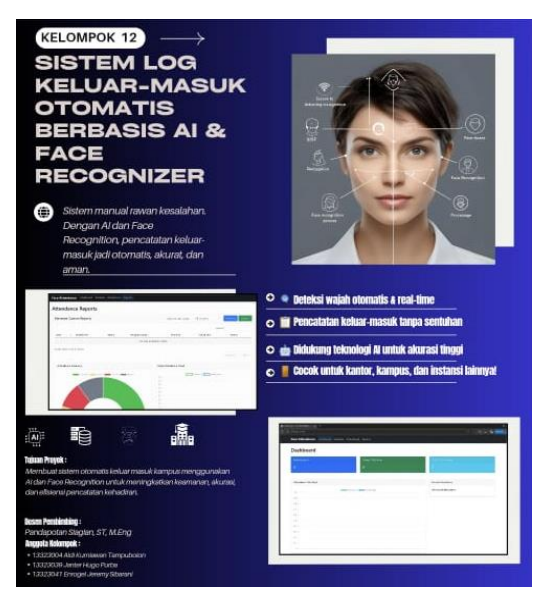

AI-Based Campus Entry Log System
Sistem pencatatan keluar masuk kampus berbasis pengenalan wajah menggunakan aplikasi mobile dan dashboard web dengan pemrosesan AI secara real-time.
- Flutter
- Firebase
- Face++
- Node.js